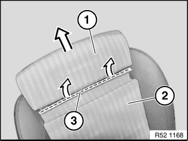
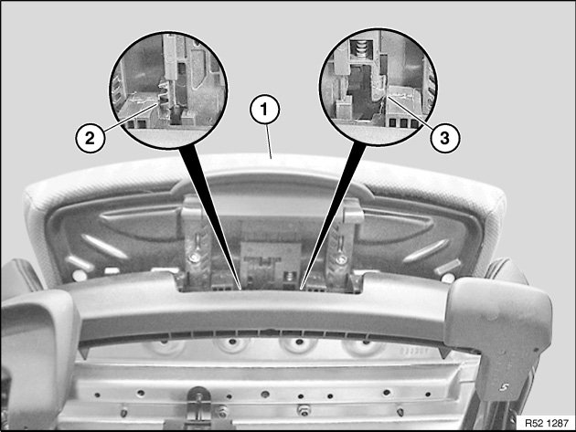
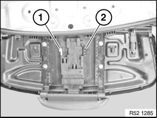
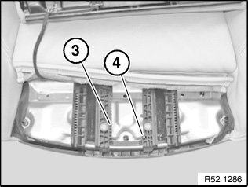
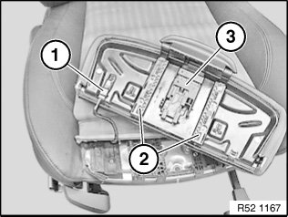

52 15 050 Removing and Installing/Replacing Thigh Support on Left or Right Front Seat (Sport/Manual)
52 15 050 Removing and installing/replacing thigh support on left or right front seat (sport/manual)

Release thigh support (1) and move forward.
Lever welt (3) of seat cover (2) out of thigh support (1).

Do not extend thigh support to its full extent.
Keep actuator (1) pressed in order to unlock centering element (2).
Carefully raise end stop (3) for thigh support with a screwdriver and at same time pull thigh support forwards out of guide rails.
View of thigh support mechanism:

1. End stop for thigh support
2. Locking mechanism for thigh support
View of seat frame mechanism:

3. Guide rail on seat with depth arrester
4. Guide rail on seat with end stop

Unfasten plug connection (1) and disconnect.
NOTE: Check guide rails (2) and adjustment mechanism (3) for damage.